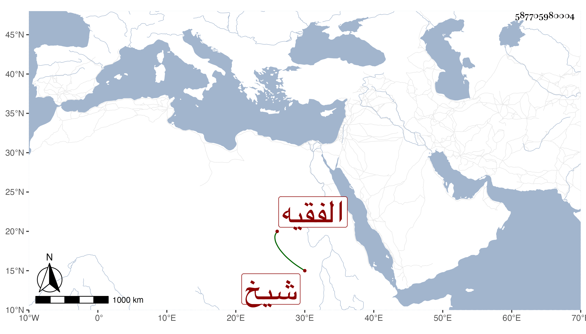

0902Sakhawi.DawLamic.ITO20230111-ara1.EIS1600.587705980004
Biography ID: 587705980004
2
آسية ابنة الملك المؤيد شيخ وأم يحيى بن الأمير يشبك الفقيه ، تزوجها أبوه وهو من موالي أبيها بعد موته وكان لالتها فيما بلغني وحجت معه ومع غيره ولم يرتض أمرها ففارقها وتزوجت بمن لا يناسب مقامها ، وعمرت حتى كف بصرها وضعف شأنها سيما بعد موت ولدها ، واستمرت كذلك حتى ماتت في أواخر شوال سنة إحدى وتسعين ودفنت بمدرسة أبيها وقد جازت السبعين مات أبوها وقد زادت على أربع سنين .
